SavePoint Pro in the Coin Collector sample and the editor window. The frames below are real captures from the shipped sample and the editor window, plus typographic plates that state what the package does in plain words.
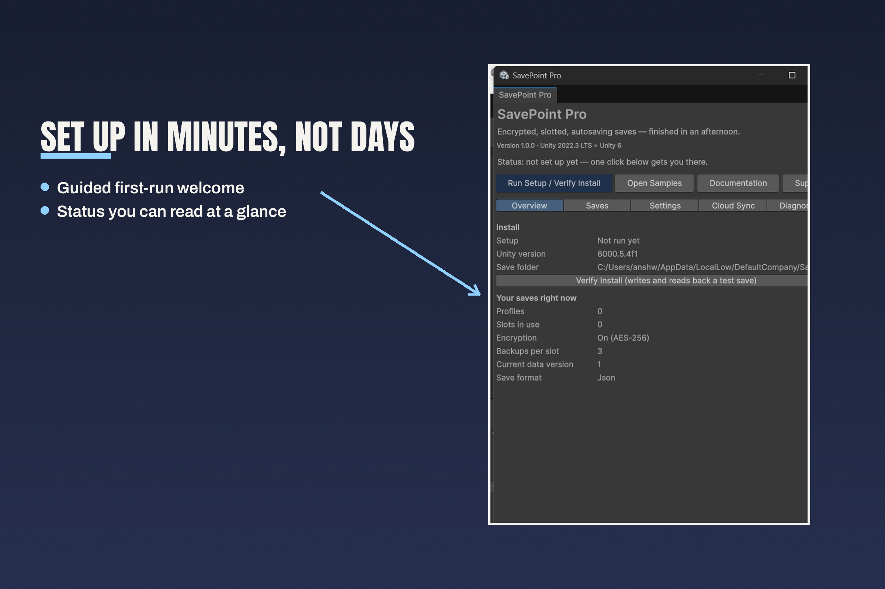
Set up in minutes, not days. The welcome window before setup: setup not run yet, Unity 6000.5.4f1, encryption on (AES-256), three backups per slot.
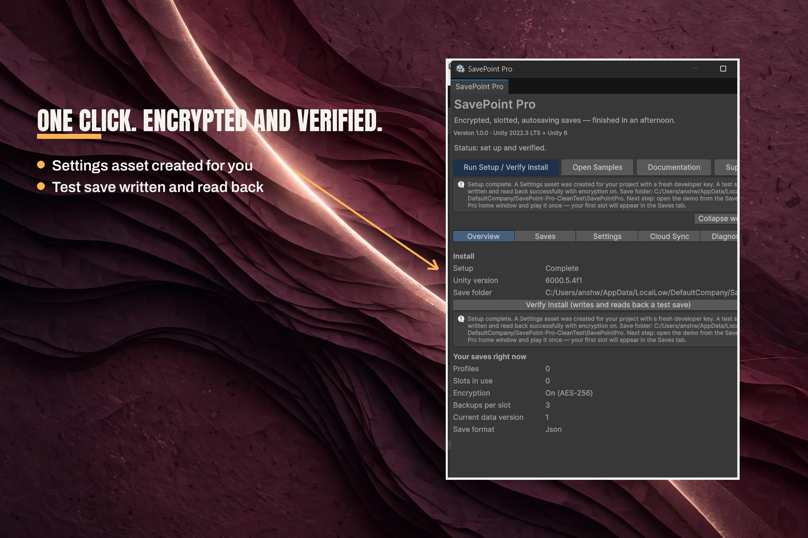
One click. Encrypted and verified. Setup complete: a Settings asset was created with a fresh developer key, and a test save was written and read back successfully with encryption on.
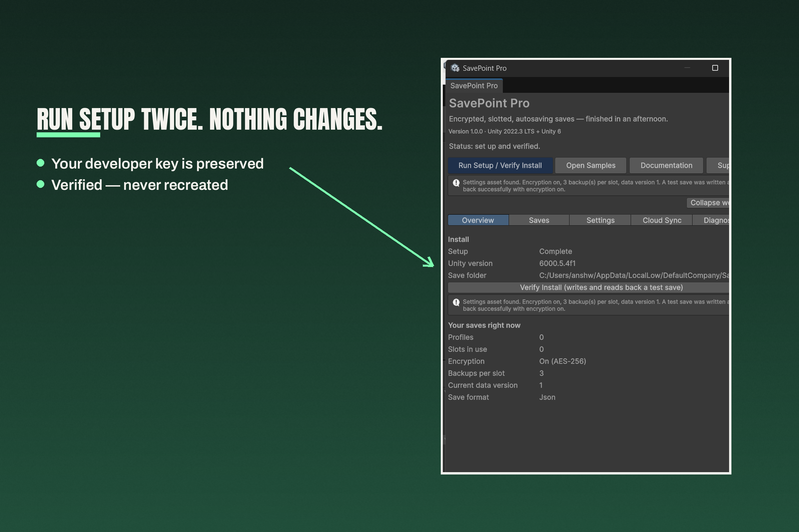
Run setup twice. Nothing changes. The second run found the existing Settings asset instead of recreating it, with the same developer key.
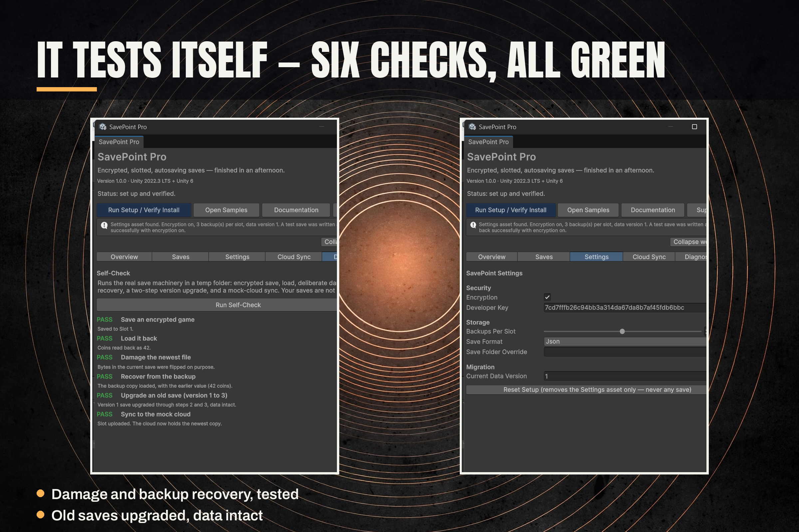
It tests itself — six checks, all green. The Diagnostics self-check runs an encrypted save and load, damage and backup recovery, an old-save upgrade, and a mock-cloud sync, and reports each step passed.
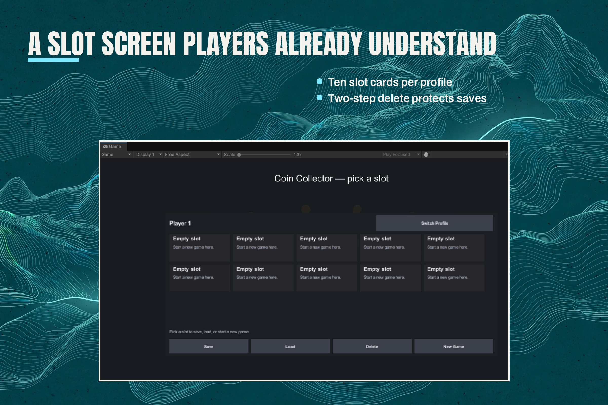
A slot screen players already understand. The Coin Collector slot picker: ten slots per profile, with Save, Load, Delete, and New Game actions.
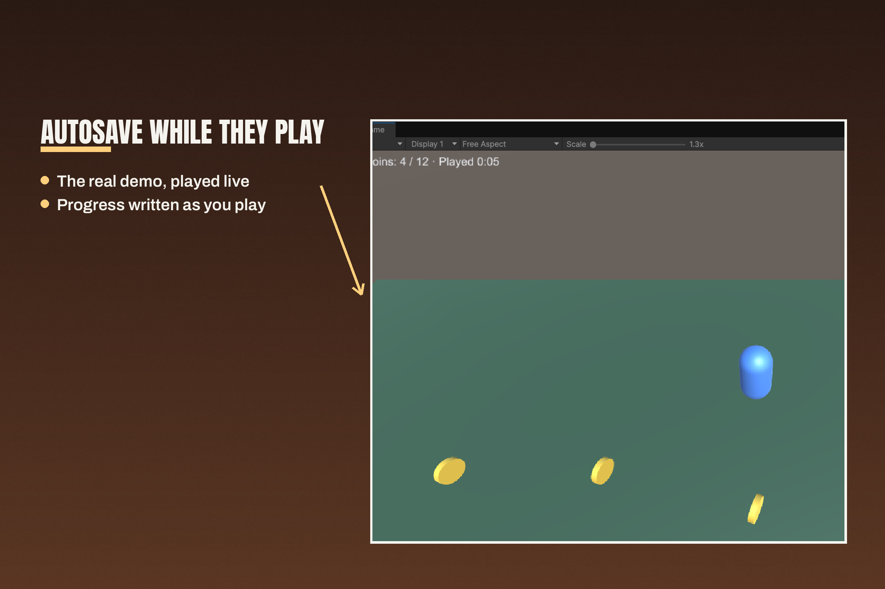
Autosave while they play. Coin Collector in play: the HUD reads Coins: 4 of 12, played 0:05.
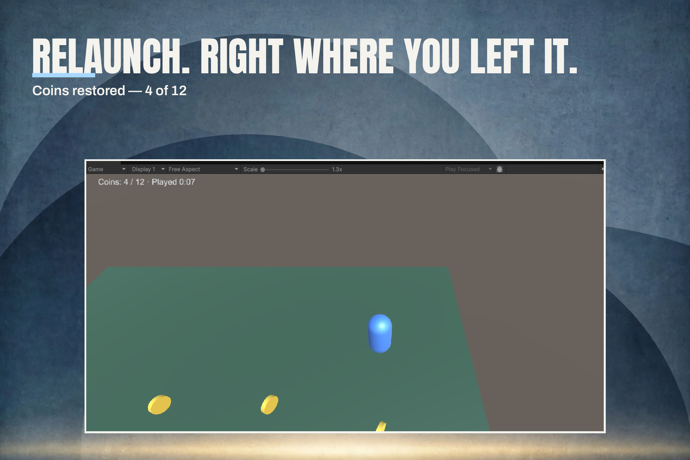
Relaunch. Right where you left it. Coins restored — 4 of 12: the Game view reads Coins: 4 of 12, played 0:07, the same 4 of 12 as before the relaunch.
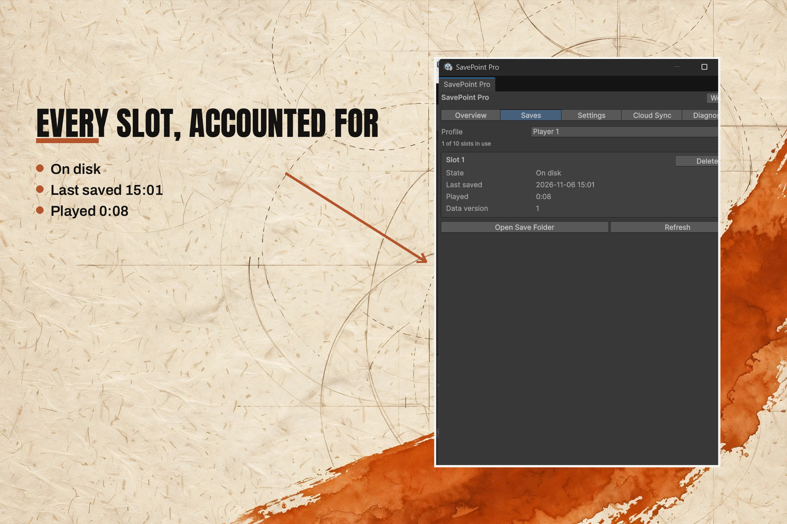
Every slot, accounted for. The Saves tab shows Slot 1 on disk, last saved 2026-11-06 15:01, played 0:08, data version 1.
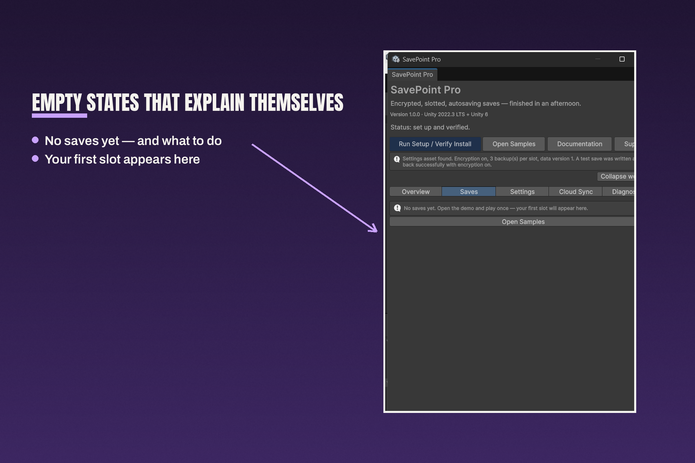
Empty states that explain themselves. With no saves yet, the Saves tab says so and tells you to open the demo and play once — your first slot will appear here.
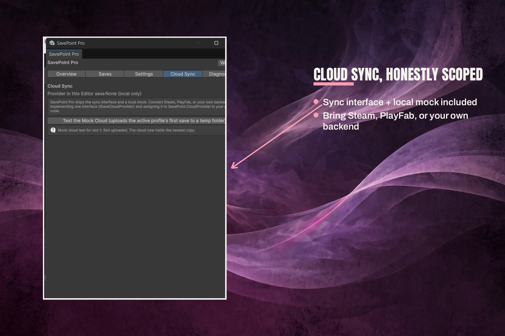
Cloud sync, honestly scoped. The Cloud Sync tab: no provider in this editor session, the sync interface and a local mock, and a mock cloud test for slot 1 — slot uploaded, the cloud now holds the newest copy.
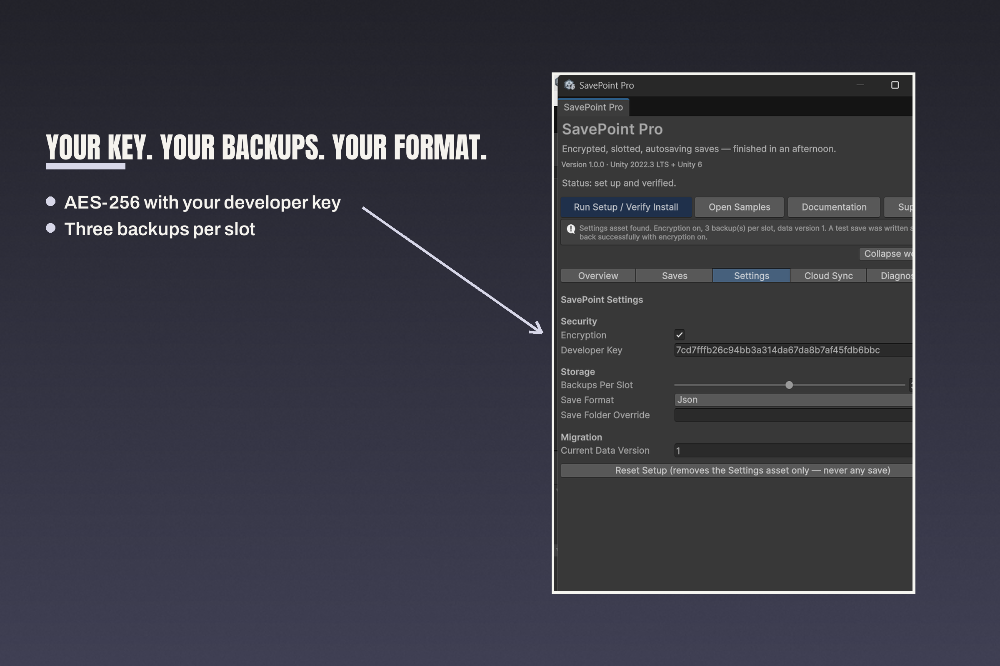
Your key. Your backups. Your format. The Settings tab: encryption on, the developer key, three backups per slot, Json format.
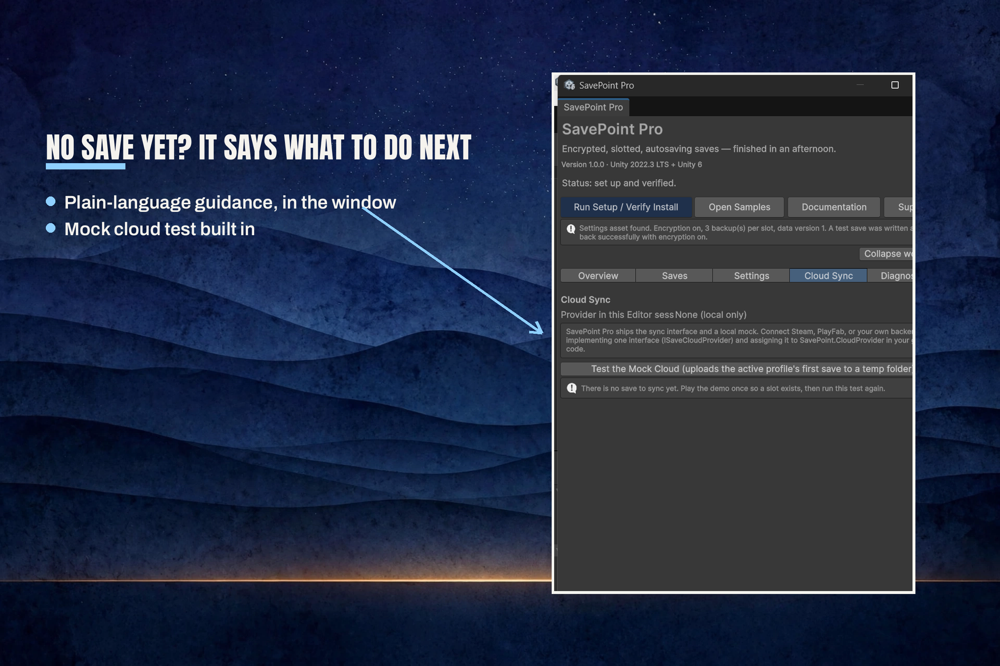
No save yet? It says what to do next. With no save to sync, the Cloud Sync tab says so and tells you to play the demo once so a slot exists, then run the test again.
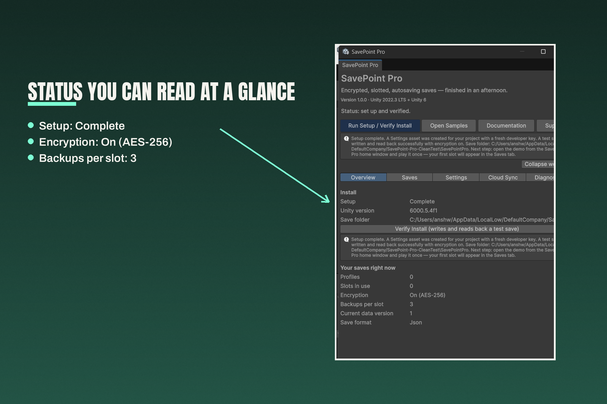
Status you can read at a glance. The install table: setup complete, encryption on (AES-256), three backups per slot.
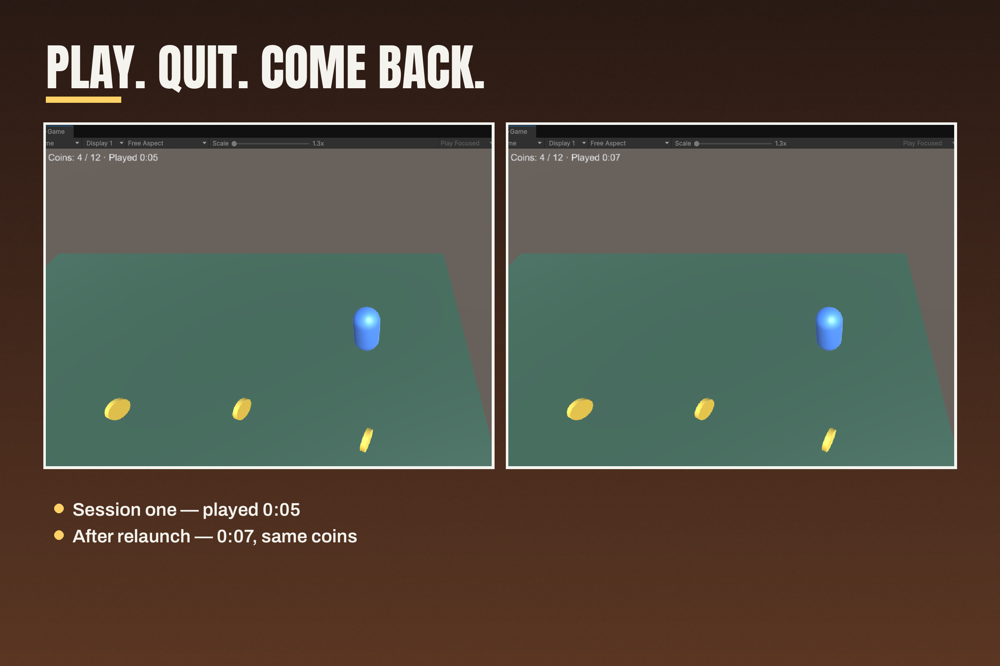
Play. Quit. Come back. Two Game frames: coins 4 of 12, played 0:05 before quitting — and the same 4 of 12, played 0:07, after relaunch.
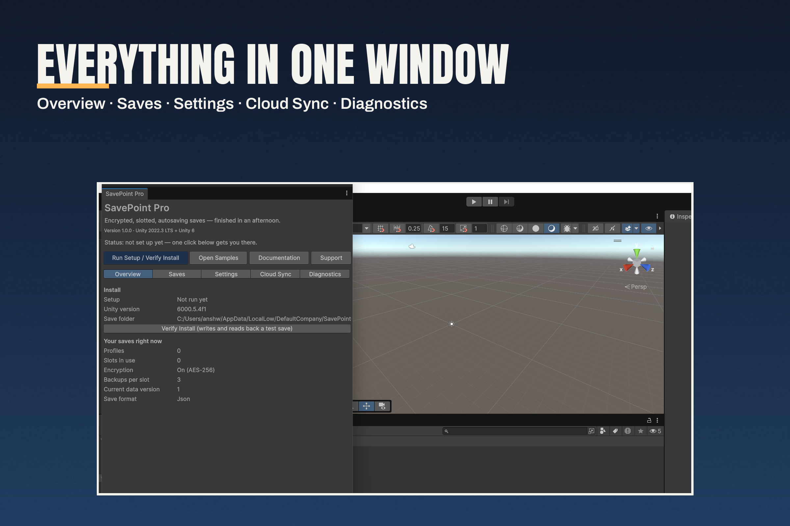
Everything in one window. Overview, Saves, Settings, Cloud Sync, and Diagnostics — all five tabs in one editor window, with the save folder path visible.